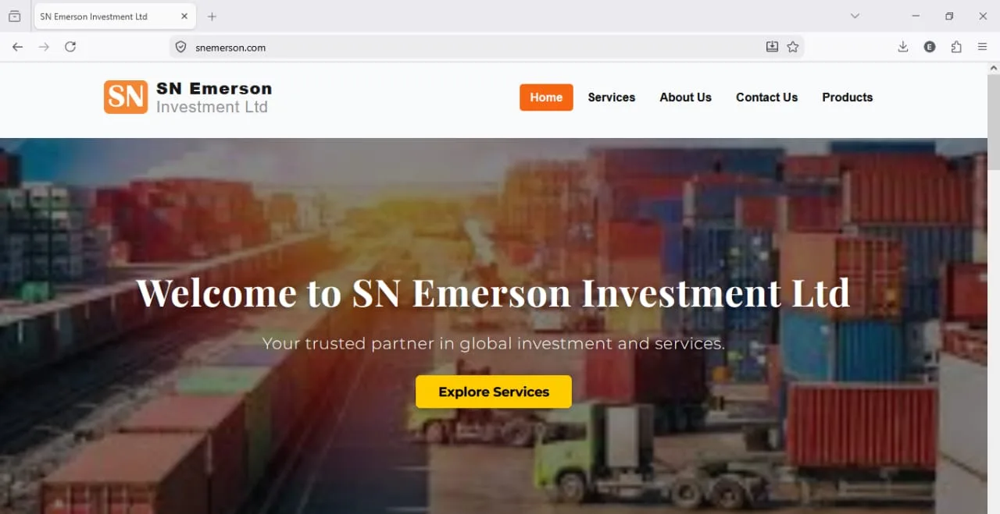
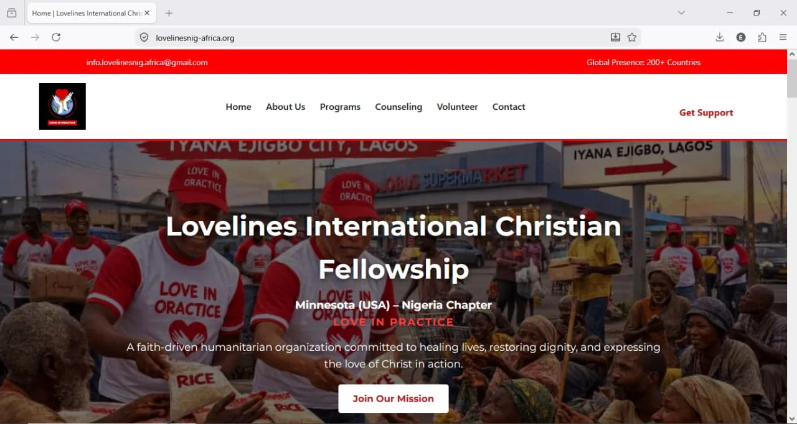

Functional Development
I focus on building usable interfaces, connected application logic, data handling, and practical workflows rather than presentation alone.
Explore selected software projects and professional service areas, including software development and property management virtual assistance. This portfolio shows the practical skills, services, and solutions I can bring to employers, clients, and organizations.
const developer = {
focus: "Practical Solutions",
frontend: "HTML / CSS / JS",
backend: "Node / Express",
database: "MongoDB / PostgreSQL"
};
This portfolio brings together selected software projects and the professional services I provide. It is designed to give employers, clients, and organizations a clear view of my technical capabilities, property virtual assistance services, and wider professional service areas.
I focus on building usable interfaces, connected application logic, data handling, and practical workflows rather than presentation alone.
My work spans frontend development, backend APIs, databases, authentication, integrations, and deployment workflows.
I approach projects with attention to the actual purpose of the system, the users involved, and the operational problem being addressed.
My professional work spans software development, property-related virtual assistance, environmental digital solutions, GSM phone repair and training, and digital marketing training. Explore the areas where I can support individuals, businesses, and organizations.
Professional virtual assistance focused on property-related administration, digital organization, property listing support, research, data entry, task management, and document management.
Web development and software solutions across frontend interfaces, backend services, databases, APIs, integrations, and functional web applications.
Environmental knowledge combined with digital approaches to waste-management organization, information management, and technology-focused environmental solutions.
Explore Environmental Work →Practical GSM phone repair services, repair training, apprenticeship opportunities, and technical training support for individuals and organizations.
Explore Phone Repair Services →Digital affiliate marketing and multilevel marketing training focused on practical digital marketing skills, marketing networks, and responsible promotion strategies.
Explore Affiliate Training →Selected work across corporate websites, nonprofit platforms, business applications, and environmental technology concepts.

CLIENT WEBSITEA functional corporate web platform developed to provide a professional online presence and support digital interaction with users.
Frontend interface development, application functionality, payment receipt upload workflow, database integration, deployment, and related web configuration.

FULL-STACK PLATFORMA full-stack platform developed to support volunteer registration, information collection, contact workflows, and administrative management.
Dynamic forms, backend API development, MongoDB Atlas integration, volunteer registration, admin functionality, contact workflows, and deployment.
A full-stack task management application designed around structured task tracking, filtering, authentication, and database-driven operations.
User authentication, task creation and management, search, task filtering, CRUD operations, relational database queries, and structured workflow handling.
A prototype environmental management concept designed around digital waste tracking and environmental monitoring.
The concept explores how digital tools can be used to organize waste-related information and support more structured environmental monitoring.
My development work covers the core technologies required to build modern web interfaces, backend services, database-driven applications, and deployable solutions.
HTML5, CSS3, JavaScript (ES6+)
Node.js, Express.js, REST APIs
MongoDB, PostgreSQL, Firebase
Render, Netlify, Vercel
Git, GitHub, GitLab, Bitbucket
VS Code, Postman, npm, CLI tools
A successful project starts with understanding what needs to be solved. I structure development around clear requirements, practical implementation, testing, and delivery.
Start a ConversationClarify the requirement, users, features, and intended outcome.
Structure the interface, application flow, data, and development approach.
Develop the frontend, backend, database logic, integrations, and functionality.
Review functionality, resolve issues, and prepare the solution for deployment.
I am open to software development roles, property virtual assistance opportunities, freelance projects, contract engagements, remote work, training opportunities, and collaborative professional work.